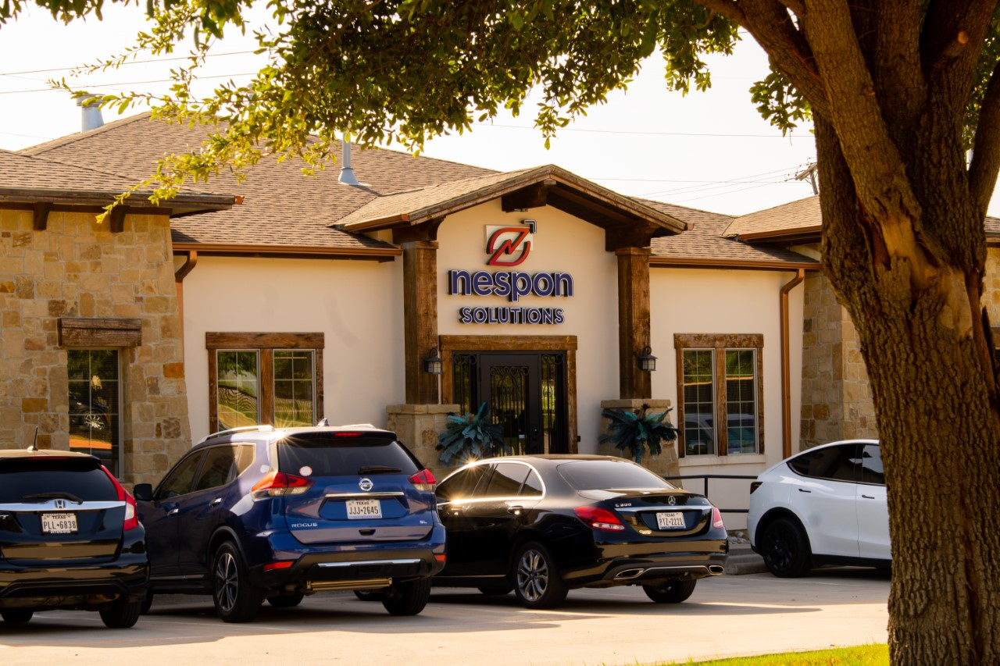

My Experience
My Programming Knowledge
The programming languages that I have experience with are Python, JavaScript, HTML, CSS, C++,
C#,
and Kotlin. Although I have used all of these languages in the past, I am much more comfortable
in
languages such as Python, JavaScript and HTML.
I am also well versed in GitHub and Git
commands,
and
I often use Visual Studio Code, and JetBrains Rider. Some other tools I am familiar with but
don't
use often are Android Studio Code, and Arduino IDE.
Many of my projects that I have made with these tools can be found on my Projects Page
My IT Experience 
Over the summer of 2022, I was hired for an internship with the company, Nespon Solutions.
This
company offers IT solutions to its clients, as they are a distributor of Salesforce and hire
Salesforce developers for their clients. My role at Nespon Solutions was to not only do the
regular
things an Intern does, but to also use my knowledge of computers and IT to help out around
the
office.
While working at Nespon I became familiar with many Microsoft applications
such as
Microsoft
teams, Outlook, and SharePoint. But in my opinion the most important tool I learned at
Nespon
Solutions was Azure Active Directory. This tool is how Nespon Solutions manages its
employees and
it's Microsoft tenant.
I became an admin for their system and received many
opportunities to
look
around the Azure AD application to identify what was possible and how I could help with the
companies IT needs. I was able to setup things like Single-Sign On (SSO), dynamic groups,
and I even
created a new SharePoint Site for the company. Working for Nespon Solutions opened my eye to
what IT
in the real world looks like and helped me understand what I wanted to learn more about.